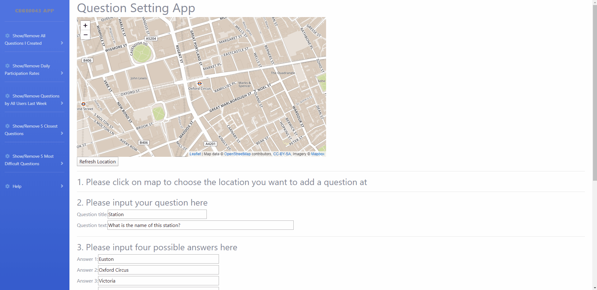

Question Setting App Help
This app is to set questions connected to a location on map. In addition, you can see questions added by all users
in last week and the 5 closest question based on your location by all users. And you can find the participation
rates of you and all users shown as a graph. Last, it can help you to find the most 5 difficult questions as a
table.
1. Add a question
The following gif shows you how to add a questions. The steps are also shown in the index website directly.

The steps to add questions:
- Find the location you want to add the question at on map (zoom and move the map freely)
- Click the location you coose on the map, there will be a popup showing the cooords for your choice
- Simply click the other location if you want to change the choice
- Fill all information of your questions in the form
- Finally, click the button "Submit yor"question" to submit your question, am alert will you all the information
of your question
- If there is no any problems, a string "Question (your question title) has been inserted" will shows below the
button, which means your question has been inserted into database successfully
Notice: All the fields must be filled in the form. The error messages will
be shown if you didn't fill all fields, including choosing a location on map, filling all fields in the form and
choosing a correct answer.
2. Show the different question points you want
This app allows you to see three different questions points layers.

Click menus "Show/Remove All Questions I Created", "Show/Remove 5 Closest Questions", "Show/Remove 5 Most Difficult
Questions" on left
- The first one will show all the questions you created, which is added at the start of this app automatically.
And you can load it at any time by click the menu.
- The second one will show the questions by all users in last week.
- The third one is for the closest five questions based on your location. To get the layer you wants by clicking
the corresponding menu.
Notice: You can switch the three layers shown in the map total freely without any conflict.
3. Show graph of Daily Participation Rates and table of 5 Most Difficult Questions
This app made a graph and a table for you.

- To find the top five difficult questions, just click on "Show/Remove 5 Most Difficult Question". The table will
be shown under the ma. If you click it again, you can hide it.
- For getting the daily participation rates of you only or all users, You can expand the menu called "Show Daily
Participation Rates", then you can see two options for two situations. Just click one you wants.
The graph will be shown in the bottom of the website. Please slide down to see it.